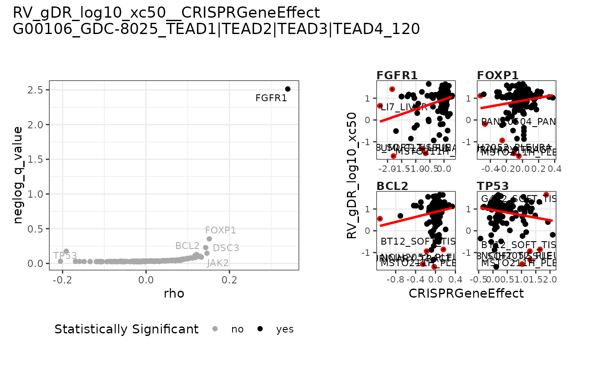
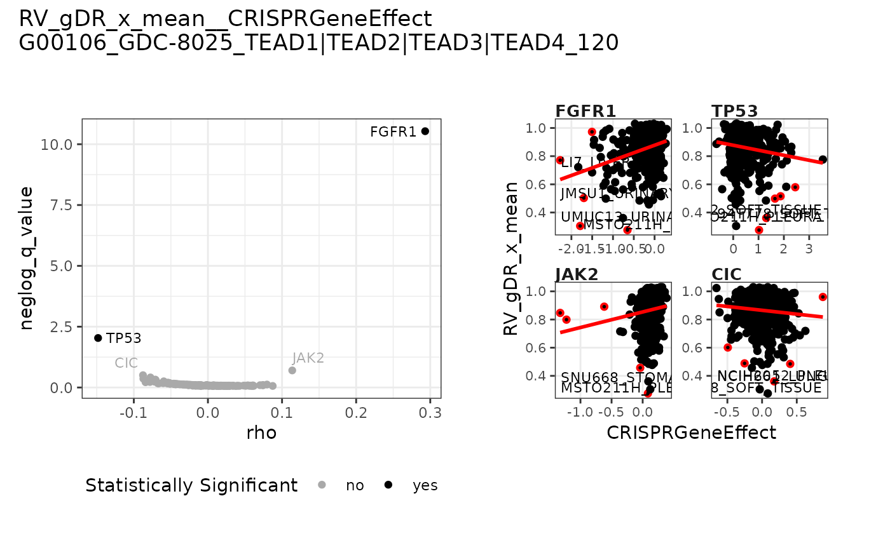
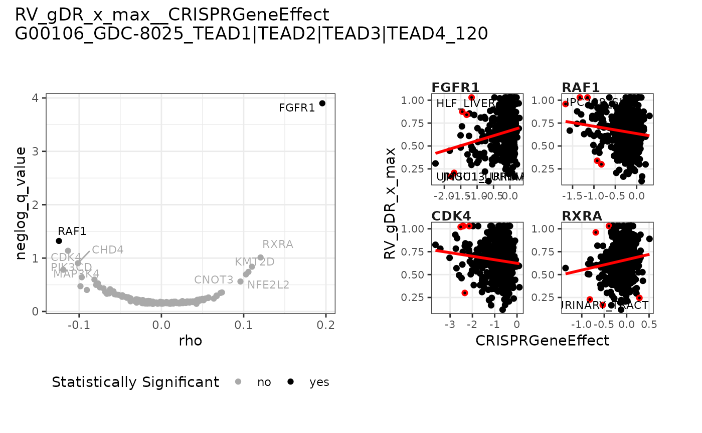

Create a nested list of plots for PRISM data with single-agent metrics
Source:R/helpers-prism-plotlist.R
create_PRISM_plot_list_sa.RdCreate a nested list of plots for PRISM data with single-agent metrics
Usage
create_PRISM_plot_list_sa(
drug_name_vec,
dt_metrics,
dt_average = NULL,
normalization_type_vec = "RV",
metric = c("xc50", "x_mean", "x_max"),
fit_source = "gDR",
meta_data_path,
feat_data_path,
feature_sets,
metadata_columns = NULL,
clear_taxonomy_info = TRUE,
with_decoding = FALSE
)Arguments
- drug_name_vec
character vector with drug names to be plotted (identifiers
DrugName)- dt_metrics
data.tablerepresenting data from theMetricsassay, outputted bygDRutils::convert_se_assay_to_dt(se, "Metrics")and single-agentSummarizedExperiment- dt_average
data.tablerepresenting data from theAveragedassay, outputted bygDRutils::convert_se_assay_to_dt(se, "Averaged")and single-agentSummarizedExperiment- normalization_type_vec
character vector with normalization types to be selected one of: "GR" ("GRvalue") or "RV" ("RelativeViability") or both
- metric
character vector with names of metric; chosen from: "xc50" ("GR50" or "IC50" - respectively depending on
normalization_type), "x_max" ("GR Max" or "E Max") or "x_mean" ("GR Mean" or "RV Mean")- fit_source
string source name for metrics
- meta_data_path
string path to metadata file describing all cancer models/cell lines which are referenced by a dataset contained within the DepMap portal. It is usually a file named
Model.csvorModel.csv.gz.- feat_data_path
string path to the directory containing the molecular feature set file to load from DepMap.
- feature_sets
character vector containing the names of the molecular feature sets to load from DepMap. These names should also correspond to the file names containing the feature data (without the extension, which is assumed to be
csvorcsv.gz)- metadata_columns
character vector with the metadata columns to load for DepMap cell lines
- clear_taxonomy_info
logical flag whether to remove taxonomy information for gene names in table with the molecular feature sets from DepMap.
- with_decoding
logical whether the feature OmicsArmLevelCNA, OmicsSomaticMutationsMatrixHotspot and OmicsSomaticMutationsMatrixDamaging should be encoded into a 0-1 scheme
Value
A named list with elements:
ls_plotnested list of plots for selected type of experimentls_assoc_datanested list of table with association data
Author
Janina Smoła janina.smola@contractors.roche.com
Examples
mae <- qs2::qs_read(system.file("testdata/finalMAE_prism.qs2", package = "gDRtestData"))
se <- mae[[gDRutils::get_supported_experiments("sa")]]
dt_metrics <- gDRutils::convert_se_assay_to_dt(se, "Metrics")
drug_name <- unique(dt_metrics[[gDRutils::get_env_identifiers("drug_name")]])[1]
create_PRISM_plot_list_sa(
drug_name_vec = drug_name,
dt_metrics = dt_metrics,
meta_data_path = system.file("depmap_data/Model.csv.gz", package = "gDRtestData"),
feat_data_path = system.file("depmap_data", package = "gDRtestData"),
feature_sets = c("CRISPRGeneEffect")
)
#> $ls_plot
#> $ls_plot$CRISPRGeneEffect
#> $ls_plot$CRISPRGeneEffect$`GDC-8025`
#> $ls_plot$CRISPRGeneEffect$`GDC-8025`$RV
#> $ls_plot$CRISPRGeneEffect$`GDC-8025`$RV$RV_gDR_log10_xc50

#>
#> $ls_plot$CRISPRGeneEffect$`GDC-8025`$RV$RV_gDR_x_mean

#>
#> $ls_plot$CRISPRGeneEffect$`GDC-8025`$RV$RV_gDR_x_max

#>
#>
#>
#>
#>
#> $ls_assoc_data
#> $ls_assoc_data$CRISPRGeneEffect
#> $ls_assoc_data$CRISPRGeneEffect$`GDC-8025`
#> $ls_assoc_data$CRISPRGeneEffect$`GDC-8025`$RV
#> $ls_assoc_data$CRISPRGeneEffect$`GDC-8025`$RV$RV_gDR_log10_xc50
#> feature response rho q_value neglog_q_value
#> <char> <char> <num> <num> <num>
#> 1: FGFR1 RV_gDR_log10_xc50 0.33979097 0.003069564 2.51292337
#> 2: FOXP1 RV_gDR_log10_xc50 0.15165775 0.443164057 0.35343547
#> 3: BCL2 RV_gDR_log10_xc50 0.14298724 0.591219704 0.22825110
#> 4: TP53 RV_gDR_log10_xc50 -0.19118940 0.666613242 0.17612606
#> 5: DSC3 RV_gDR_log10_xc50 0.14608629 0.713441788 0.14664146
#> ---
#> 145: SF3B1 RV_gDR_log10_xc50 -0.02123908 0.946104103 0.02406107
#> 146: KMT2D RV_gDR_log10_xc50 -0.01340607 0.946324813 0.02395977
#> 147: U2AF1 RV_gDR_log10_xc50 -0.02160233 0.946546062 0.02385825
#> 148: RHOA RV_gDR_log10_xc50 -0.02909737 0.946773401 0.02375395
#> 149: CDK4 RV_gDR_log10_xc50 -0.06813350 0.947026529 0.02363785
#>
#> $ls_assoc_data$CRISPRGeneEffect$`GDC-8025`$RV$RV_gDR_x_mean
#> feature response rho q_value neglog_q_value
#> <char> <char> <num> <num> <num>
#> 1: FGFR1 RV_gDR_x_mean 0.293106529 2.913225e-11 10.53562599
#> 2: TP53 RV_gDR_x_mean -0.148226553 9.231880e-03 2.03470986
#> 3: JAK2 RV_gDR_x_mean 0.113757797 1.985975e-01 0.70202617
#> 4: CIC RV_gDR_x_mean -0.087622859 3.114935e-01 0.50655098
#> 5: CDK4 RV_gDR_x_mean -0.077563596 3.854880e-01 0.41398915
#> ---
#> 145: RICTOR RV_gDR_x_mean 0.023985942 8.653591e-01 0.06280365
#> 146: U2AF1 RV_gDR_x_mean 0.007235126 8.659303e-01 0.06251708
#> 147: NFE2L2 RV_gDR_x_mean 0.024250178 8.665097e-01 0.06222657
#> 148: RHOA RV_gDR_x_mean 0.006994082 8.671018e-01 0.06192993
#> 149: KMT2D RV_gDR_x_mean 0.037048856 8.677244e-01 0.06161818
#>
#> $ls_assoc_data$CRISPRGeneEffect$`GDC-8025`$RV$RV_gDR_x_max
#> feature response rho q_value neglog_q_value
#> <char> <char> <num> <num> <num>
#> 1: FGFR1 RV_gDR_x_max 0.195605854 0.0001257931 3.9003433
#> 2: RAF1 RV_gDR_x_max -0.124550350 0.0477535114 1.3209947
#> 3: CDK4 RV_gDR_x_max -0.113555600 0.0728986016 1.1372808
#> 4: RXRA RV_gDR_x_max 0.120542996 0.0971801709 1.0124223
#> 5: CHD4 RV_gDR_x_max -0.101488117 0.1247265632 0.9040410
#> ---
#> 145: U2AF1 RV_gDR_x_max -0.010956099 0.7162334723 0.1449454
#> 146: H3-3A RV_gDR_x_max -0.004571759 0.7172936121 0.1443030
#> 147: POT1 RV_gDR_x_max 0.010742777 0.7183433953 0.1436679
#> 148: RHOA RV_gDR_x_max 0.042633228 0.7194681062 0.1429885
#> 149: TSC2 RV_gDR_x_max -0.010164816 0.7206948251 0.1422486
#>
#>
#>
#>
#>